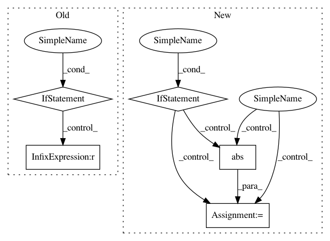

10a6518986bad8bd0eed0f2287922b0d6612e033,tensorly/decomposition/_nn_cp.py,,non_negative_parafac_hals,#,294
Before Change
rec_error = tl.sqrt(tl.abs(norm_tensor**2 + factors_norm**2 - 2*iprod)) / norm_tensor
rec_errors.append(rec_error)
if iteration > 1:
if verbose:
print("reconstruction error={}, variation={}.".format(
rec_errors[-1], rec_errors[-2] - rec_errors[-1]))
if tol and abs(rec_errors[-2] - rec_errors[-1]) < tol:
if verbose:
print("converged in {} iterations.".format(iteration))
break
cp_tensor = CPTensor((weights, factors))
if return_errors:
return cp_tensor, rec_errors
else:
After Change
iprod = tl.sum(tl.sum(mttkrp*factor, axis=0)*weights)
rec_error = tl.sqrt(tl.abs(norm_tensor**2 + factors_norm**2 - 2*iprod)) / norm_tensor
rec_errors.append(rec_error)
if iteration >= 1:
rec_error_decrease = rec_errors[-2] - rec_errors[-1]
if verbose:
print("iteration {}, reconstruction error: {}, decrease = {}".format(iteration, rec_error, rec_error_decrease))
if cvg_criterion == "abs_rec_error":
stop_flag = abs(rec_error_decrease) < tol
elif cvg_criterion == "rec_error":
stop_flag = rec_error_decrease < tol
else:
raise TypeError("Unknown convergence criterion")
if stop_flag:
if verbose:
print("PARAFAC converged after {} iterations".format(iteration))
break
else:
if verbose:
print("reconstruction error={}".format(rec_errors[-1]))
cp_tensor = CPTensor((weights, factors))
if return_errors:
return cp_tensor, rec_errors
else:
In pattern: SUPERPATTERN
Frequency: 4
Non-data size: 5
Instances
Project Name: tensorly/tensorly
Commit Name: 10a6518986bad8bd0eed0f2287922b0d6612e033
Time: 2021-02-25
Author: caglayan.tuna@irisa.fr
File Name: tensorly/decomposition/_nn_cp.py
Class Name:
Method Name: non_negative_parafac_hals
Project Name: EpistasisLab/scikit-rebate
Commit Name: 163eb7df13667e21b0e02a2706e18d1f53eee610
Time: 2020-01-29
Author: alexmxu99@gmail.com
File Name: skrebate/iterrelief.py
Class Name: IterRelief
Method Name: fit
Project Name: ntucllab/libact
Commit Name: e81142f0869321cd8792e13bfc4f6fb85d9f1efc
Time: 2015-12-22
Author: yangarbiter@gmail.com
File Name: libact/query_strategies/uncertainty_sampling.py
Class Name: UncertaintySampling
Method Name: make_query
Project Name: EpistasisLab/scikit-rebate
Commit Name: ece383696800b9b34854df27a65a3d1d74669952
Time: 2020-05-28
Author: alexmxu@alexs-mbp-3.attlocal.net
File Name: skrebate/iterrelief.py
Class Name: IterRelief
Method Name: fit